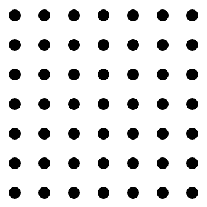

<link rel="import" href="polymer-utils.html">
<link rel="import" href="multiply-formula-display.html">

<dom-module id="dots-thumbnail">
  <style>
    :host {
      display: inline-block;
      vertical-align: top;
      width: 350px;
      height: 350px;
      overflow-x: hidden;
      overflow-y: hidden;
    }
    #thumbnaildotsgrid {
      width: 350px;
      height: 350px;
      overflow-x: hidden;
      overflow-y: hidden;
      pointer-events: none;
    }
    #thumbnailmultiplyformula {
      width: 200px;
      height: 270px;
      position: absolute;
      top: 50px;
      left: 80px;
      z-index: 2;
    }
    #thumbnailmultiplyformulabackground {
      width: 200px;
      height: 270px;
      background-color: white;
      opacity: 0.95;
      position: absolute;
      top: 50px;
      left: 80px;
      z-index: 1;
    }
  </style>
    <template>
        <div style="position: relative">
            
            <multiply-formula-display id="thumbnailmultiplyformula"></multiply-formula-display>
            <div id="thumbnailmultiplyformulabackground"></div>
        </div>
    </template>
  <script src="dots-common.js"></script>
  <script src="dots-thumbnail.js"></script>  
</dom-module>
